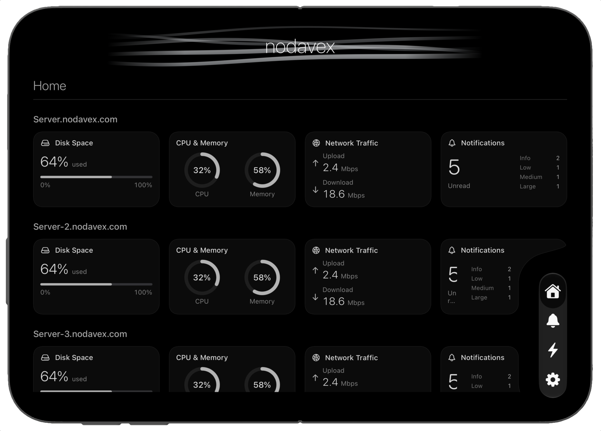

Your fleet at a glance
See multiple servers together in an expanded dashboard. Disk usage, CPU and memory, upload and download traffic, and unread notification counts sit side by side, helping you compare resource usage and spot servers that need attention.